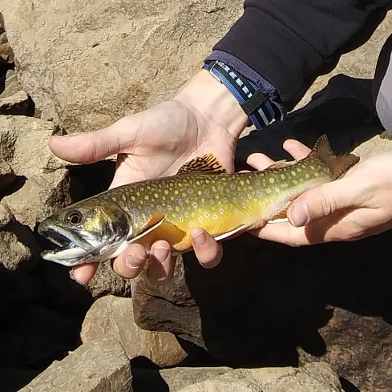

Ibantik Report 2020
Statistics
| Lake/Pond |
September |
Number of Fish |
Type of Fish |
| Ibantik |
12 |
1 |
1 Brook |
| TOTAL |
|
1 |
|
| NUMBER OF TRIPS |
|
1 |
|
| AVERAGE |
|
1 |
|
| RATING |
|
Slow |
|

Strategies
Ibantik Lake is located in the Uinta Mountains, and requires you to walk
about 4 miles one way to get to it. Because of this, it is best to make it be at
least a 2 day backpacking trip. Because this lake is located in the Uinta’s, it is
almost guaranteed that the water is going to be crystal clear which usually makes
fishing with spinners and spoons a very good idea. However, we didn't go until
later in the year, so we didn't get a good spinner or spoons bite. Instead, bottom
bouncing 1.5 to 2" orange or yellow tube jigs tipped with a pink maggot was the
way to go.